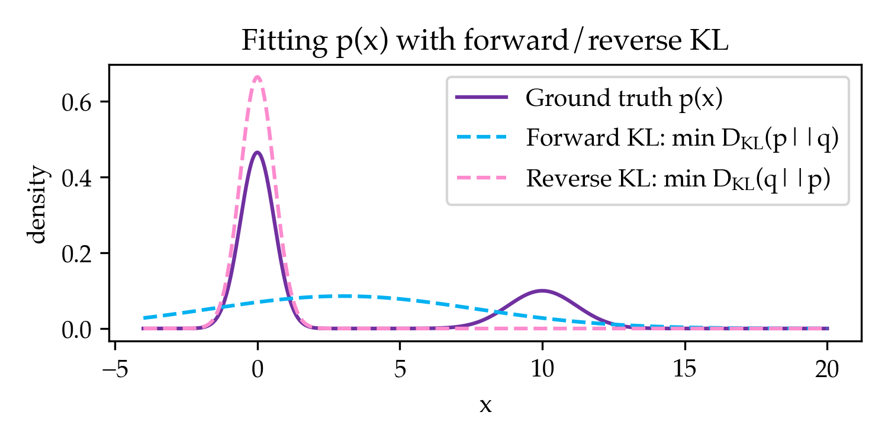

10/12/2025
In generative modeling, we want to learn a model that best matches a ground truth data distribution. Over some experiments in pre-training and RL with Konwoo, we've found it helpful to reason about learning algorithms through the divergence they minimize between the model and data. In this post, we will discuss how pre-training and reinforcement learning can be interpreted as minimizing the forward KL and reverse KL divergence, respectively. This might provide some intuiton for the models produced by both training paradigms and how they might benefit each other.
Suppose we have two data distributions $p, q$ supported over examples $x\in\mathcal{X}$. Throughout this post, we will take $p$ to be the ground truth data distribution we would like the model $q$ to match. The central divergence we will be studying in this blog post is KL. The (forward) KL divergence between $p, q$ is defined as
$$\KL{p}{q} = \Eof{x\sim p}{\log p(x) - \log q(x)}$$
intuitively mapping to "how likely does the model find ground truth data". The reverse KL divergence is defined as $\KL{q}{p}$ for the same expression (this is not the same as the forward KL).
Both of the divergences are zero if and only if $p=q$. However, in the practical case where the divergence is not minimized due to struggles in optimization or capacity, both divergences behave very differently. A classic visual which we first saw in Kang and Hashimoto, 2020 is that when fitting a unimodal Gaussian to a mixture of Gaussians, both divergences naturally prefer different solutions (Figure 1).

This captures the intuition that forward KL is a "mass-covering" divergence whereas reverse KL is a "mode-seeking" divergence. In the rest of this post, we will show how pre-training minimizes forward KL and RL minimizes reverse KL.
When pre-training generative models, it is common to use cross-entropy loss between the ground truth and the model, defined as
$$\CE{p}{q} = \Eof{x\sim p}{-\log q(x)}$$
If we define the entropy of a distribution as $\H{p} = \Eof{x\sim p}{-\log p(x)}$, designed to capture its inherent uncertainty, there is a simple relationship between cross-entropy and forward KL.
$$ \KL{p}{q} = \Eof{x\sim p}{\log p(x) -\log q(x)} = \CE{p}{q} - \H{p} $$
Since the entropy of $p$ is independent of the model $q$ we are trying to learn, minimizing the cross-entropy with respect to the parameters of $q$ is equivalent to minimizing the forward KL divergence. The nature of forward KL minimization biases pre-trained models to be mass-covering and diverse relative to other divergences which are more mode-seeking.
Though minimizing cross-entropy loss is a popular choice for pre-training (e.g. the formula for all pre-trained language models), is this the only reason we should prefer it over other divergences? Interestingly, for a broad class of divergences, forward KL is the only divergence that we can estimate under standard constraints.
Proposition 1: Forward KL is the only $f$-divergence with a stochastic gradient that can be computed given samples from $p$ without its likelihood function.
We provide a proof of this fact in Appendix A. This suggests that cross-entropy is chosen for its practical properties and that there may be different divergences with more favorable properties that require different algorithms or more compute.
Can we similarly interpret reinforcement learning as minimizing a divergence? At first, RL might seem quite different since we are hoping to maximize a reward, not match a distribution. However, we can actually represent this reward maximization as distribution matching. We start by formulating RL with KL minimization initialized from a model $q_0$ as maximizing the reward function
$$J(q) = \Eof{x\sim q}{R(x)} - \beta \KL{q}{q_0}$$
We first derive what model $q^*$ maximizes this reward. This derivation has also come up in the previous blog post on Twisted Sequential Monte Carlo.
\begin{aligned} J(q) &= \Eof{x \sim q}{R(x)} - \beta \KL{q}{q_0} \\ &= \Eof{x \sim q}{R(x)} - \beta \Eof{x \sim q}{\log q(x) - \log q_0(x)} \\ &= \Eof{x \sim q}{R(x) - \beta \log q(x) + \beta \log q_0(x)} \\ &= \Eof{x \sim q}{\beta\log e^{R(x)/\beta} - \beta \log q(x) + \beta \log q_0(x)} \\ &= \beta\Eof{x \sim q}{\log q_0(x) e^{R(x)/\beta} - \log q(x)} \\ &= \beta\Eof{x \sim q}{\log \frac{q_0(x) e^{R(x)/\beta}}{Z_{q^*}} - \log q(x)} + \beta\log Z_{q^*} \\ &= -\beta\KL{q}{q^*} + \beta\log Z_{q^*} \\ \text{where } q^*(x) &:= \frac{1}{Z_{q^*}} q_0(x) e^{R(x)/\beta} \text{ and } Z_{q^*} = \sum_x q_0(x) e^{R(x)/\beta} \end{aligned}
In this derivation, $q^*(x)$ is the base policy reweighted by the reward distribution and maximizes the objective ($Z_{q^*}$ is the normalizing constant that ensures $q^*(x)$ is a distribution). Since $\beta\log Z_{q^*}$ is independent of $q$, maximizing $J(q)$ is equivalent to minimizing $\KL{q}{q^*}$, which is the reverse KL divergence between our model $q$ and the optimal policy $q^*$. Therefore, we can interpret RL as reverse KL minimization against the ground truth distribution $p = q^*$.
Similar to pre-training, RL hopes to learn a sampler $q$ that is close to this distribution. Unlike pre-training which operates on samples from $p$ without access to its likelihood function, RL operates on the likelihood function (given by the reward function/initial model) without access to ground truth samples. This naturally maps to the choice of divergence: pre-training uses forward KL since it can only sample from $p$ and RL uses reverse KL since it can only sample from $q$.
We note that in practice, RL significantly decreases the entropy of the model and results in mode collapse (e.g. Cui et al, 2025). One reason is because the target distribution is itself sparse for settings like reasoning. However, even when the target distribution is the same as natural pre-training target distributions, Konwoo and I found that RL has a natural pre-disposition to collapse to a mode of the distribution and improve reverse KL at the cost of forward KL.
Should we care more about minimizing forward or reverse KL? One benefit of using RL is that reverse KL is more aligned with downstream metrics that we care about. For example, for most benchmarks, we care about accuracy of generations from the model $q$, which directly maps to maximizing reward, or minimizing reverse KL. However, the story is not so simple since RL crucially depends on minimizing forward KL as we discuss in the next section.
Though pre-training and RL naturally correspond to their own divergences, are there ways in which they can benefit from the other paradigm? We'll cover how RL already benefits from forward KL minimization and how pre-training doesn't seem to benefit from reverse KL minimization.
Though RL minimizes reverse KL, the initialization for RL is generally produced through minimizing forward KL. One weak sense in which this is true is that pre-training precedes RL; however, this is confounded with transfer learning because the target distribution $p$ for pre-training is not the same as the $p$ for RL.
A more clear cut case is supervised fine-tuning (SFT). A common way to perform SFT when given a binary reward function is rejection sample fine-tuning with the following steps: (1) sample completions from $q$ (2) filter for correct generations (3) train on these filtered generations using cross-entropy. Interestingly, rejection sampling can be equivalent to sampling from the reward-weighted target distribution of $q^*=p$. Therefore, SFT is actually minimizing the forward KL divergence $\KL{p}{q}$, unlike RL which minimizes $\KL{q}{p}$ for the same $p$. In settings where the base model has little coverage over the right answer, SFT is found to be much more effective (Razin et al, 2023). Even more prevalently, SFT is empirically critical to maximally leveraging RL, showing that the benefit of forward KL is not simply transfer learning.
Why would forward KL matter for RL? To punt this question further upstream, it is typical for sample complexities in RL to be written in terms of quantities such as forward KL or coverage. For example, in Thompson Sampling, the number of samples it requires to achieve $\epsilon$ error is a function of $\KL{p}{q}$, not $\KL{q}{p}$ (Russo et al Tutorial, 8.1). Furthermore, other papers show that coverage as a metric may be more predictive of post-training performance relative to forward KL (Chen et al, 2025). Intuitively, it is important that the initial policy has sufficient coverage so that it has a chance of generating the correct answer. Since forward KL encourages mass-covering behavior, it is more helpful for RL compared to solutions from minimizing reverse KL that induce mode collapse.
To my knowledge, there aren't many successes of using reverse KL minimization during pre-training. When Konwoo and I inadvertently used reverse KL minimization instead of forward KL in some early experiments, we found that models would rapidly mode collapse. This was visible not only in the metrics (where the model has lower reverse KL and higher forward FKL) but also in the generations, which all looked much more similar to each other than our forward KL models. It would be interesting if there were opportunities for reverse KL or sampling from the student more broadly to improve pre-training, beyond the recent wave of works on adding Chain of Thought and Quiet-STaR style objectives (Zelikman et al, 2022) to improve pre-training.
Throughout this post, we have shown how pre-training minimizes forward KL and RL minimizes reverse KL. Hopefully, this gives some intuition for the difference between both learning paradigms and what lessons they might have to offer each other. Thank you for reading, and feel free to reach out with any questions or thoughts!
In this section, we show how cross-entropy (i.e. forward KL) is the unique $f$-divergence that can be directly minimized from samples of the ground truth data without the likelihood function. We define $f$-divergences as
$$\fd{p}{q} = \sum_x q(x) f\p{\frac{p(x)}{q(x)}} = \Eof{x\sim q}{f\p{\frac{p(x)}{q(x)}}}$$
for a choice of convex $f$. Different choices of $f$ covers automatically covers a broad class of divergences such as total variation distance, Jensen-Shannon, Hellinger distance, $\chi^2$, etc. For example, KL divergence corresponds to $f(x) = x\log x$.
We are interested in determining which divergences we can minimize given samples from $p$ without a likelihood function. To answer this question, we take the gradient of the divergence with respect to the model $q$'s parameters $\theta$.
\begin{aligned} &\nabla_\theta \fd{p}{\model} \\ &= \nabla_\theta \sum_x \model(x) f\p{\frac{p(x)}{\model(x)}} \\ &= \sum_x \nabla_\theta \model(x) f\p{\frac{p(x)}{\model(x)}} + \model(x) \nabla_\theta f\p{\frac{p(x)}{\model(x)}} && \text{[product rule]}\\ &= \sum_x \nabla_\theta \model(x) f\p{\frac{p(x)}{\model(x)}} - \model(x) f'\p{\frac{p(x)}{\model(x)}}\frac{p(x)}{\model(x)^2}\nabla \model(x) && \text{[chain rule]}\\ &= \sum_x \nabla_\theta \model(x) \p{f\p{\frac{p(x)}{\model(x)}} - \frac{p(x)}{\model(x)}f'\p{\frac{p(x)}{\model(x)}}} && \text{[rearrange]}\\ &= \sum_x \model(x) \nabla_\theta \log \model(x) \p{f\p{\frac{p(x)}{\model(x)}} - \frac{p(x)}{\model(x)}f'\p{\frac{p(x)}{\model(x)}}} && \text{[log-gradient trick]}\\ &= \Eof{x\sim \model(x)}{\nabla_\theta \log \model(x) \p{f\p{\frac{p(x)}{\model(x)}} - \frac{p(x)}{\model(x)}f'\p{\frac{p(x)}{\model(x)}}}} && \text{[expectation]}\\ &= \Eof{x\sim p(x)}{\frac{\model(x)}{p(x)}\nabla_\theta \log \model(x) \p{f\p{\frac{p(x)}{\model(x)}} - \frac{p(x)}{\model(x)}f'\p{\frac{p(x)}{\model(x)}}}} && \text{[importance sampling]}\\ &= \Eof{x\sim p(x)}{\nabla_\theta \log \model(x) \p{\frac{f\p{t}}{t} - f'\p{t}}}\\ & \text{for }t = \frac{p(x)}{\model(x)}\\ \end{aligned}
We note that for some modifications of $f$, the gradient does not change at all. For example, if we map $f(t) \to f(t) + t$, the value of $\frac{f\p{t}}{t} - f'\p{t}$ does not change at all. Alternatively, if we map $f(t) \to f(t) + 1$, the gradient has an additional $\Eof{x\sim p(x)}{\frac{1}{t}\nabla_\theta \log \model(x)}$ which is importance sampled $\Eof{x\sim \model(x)}{\nabla_\theta \log \model(x)}$ which is zero (shown in RL post here).
If we don't have access to $p(x)$, then we want a gradient that does not depend on $t$, or equivalently, $\frac{f\p{t}}{t} - f'\p{t} = c$. According to this Symbolab chat, the only valid choice of $f$ is $t\ln(t)$ (up to constants). Therefore, forward KL is the only $f$-divergence we can minimize with stochastic gradient descent without only given samples to $p$. Obviously, there are divergences that are not $f$-divergences that are worth considering (e.g. MSE); this analysis is meant to rule out a large class rather than all such divergences.